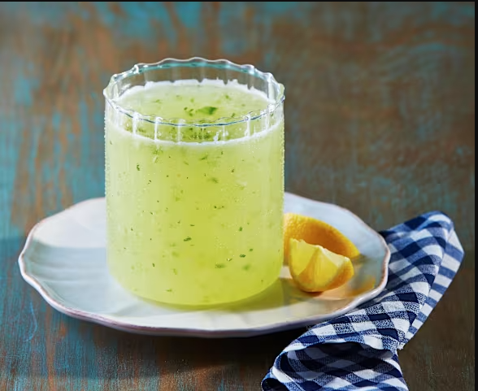
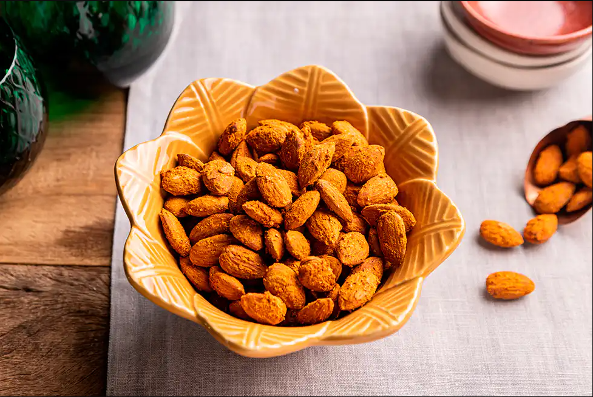
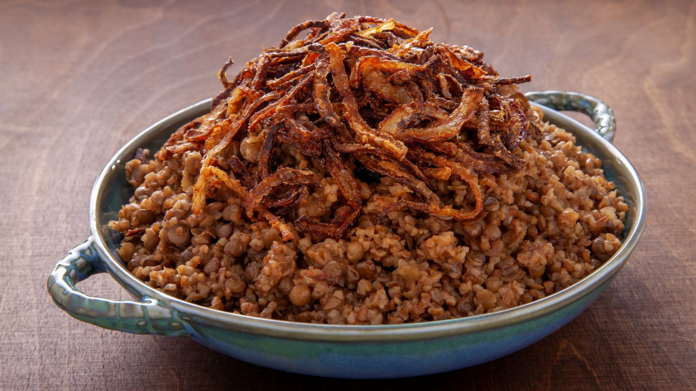
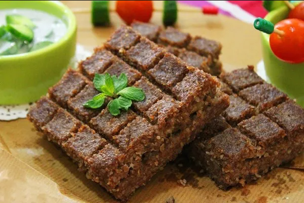
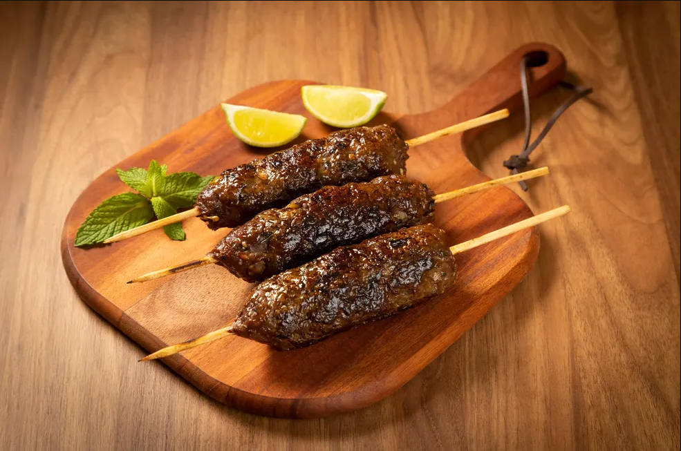
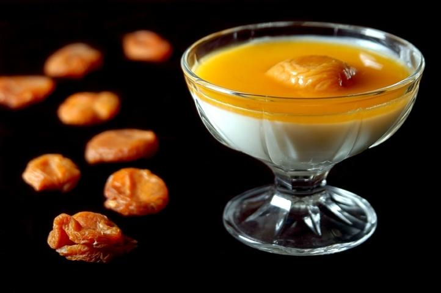
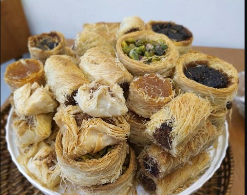
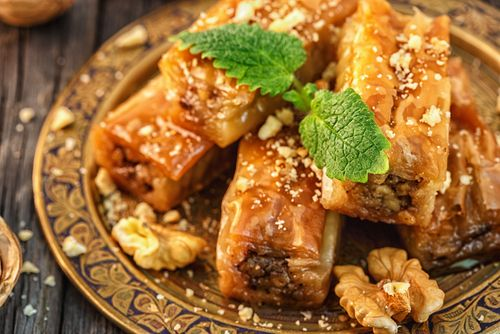
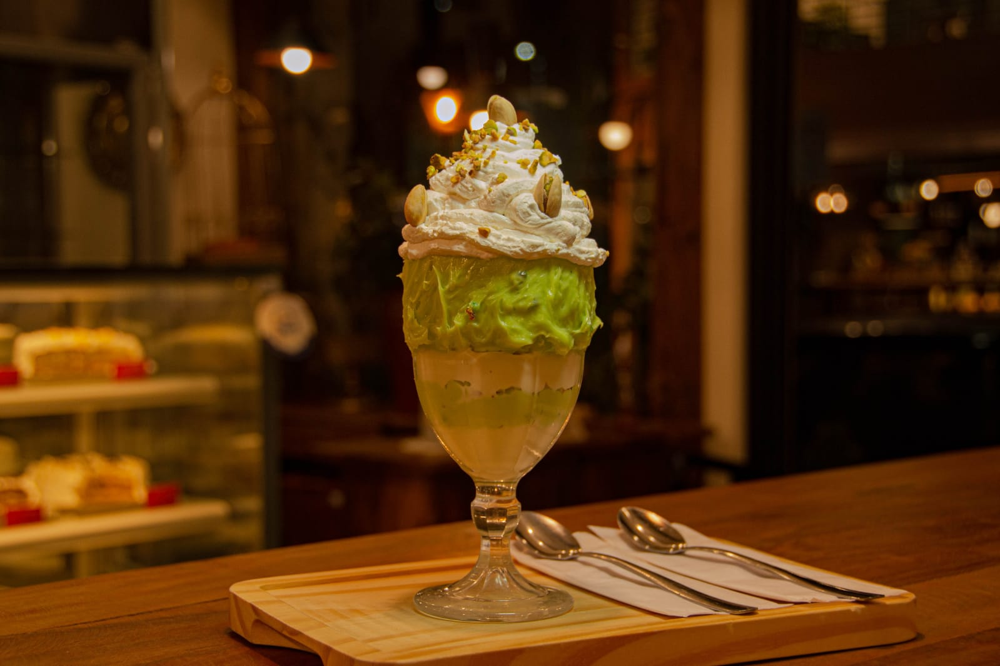

Cardapio
Mesa de degustação Entrada

Refrescante e aromática, a tradicional limonada
libanesa combina o sabor cítrico do limão com a doçura
suave do açúcar e um toque especial de hortelã fresca.
Servida bem gelada, é a bebida perfeita para acompanhar
pratos árabes ou simplesmente para se refrescar com um sabor
Um clássico da culinária libanesa que conquista à primeira gole!
Limonada Libanesa.

Karkadeh Egípcio.

Uma seleção crocante e saborosa de sementes típicas do Oriente Médio.
como girassol, abóbora e melancia, torradas no ponto certo
e levemente salgadas, perfeitas para beliscar enquanto
aguarda o prato principal ou para acompanhar uma bebida refrescante
Um petisco simples, mas cheio de tradição e sabor!
Petisco de Sementes Variados.
Mesa de Café

Mini Maamoul.
Pratos Quentes

Arroz Bi Chairie.

Prato classico libanê á base de arroz e lentlhas.
Cozidos com cebolas caramelizadas e especiarias.
Mjadra.

Charuto de folha de uva.

Um clássico da culinária árabe preparado com carne moída temperada
trigo fino, cebola e especiarias tradicionais, tudo cuidadosamente
assado até atingir uma textura macia por dentro e dourada por cima.
Servido em fatias generosas, o kibe na bandeja é perfeito para
compartilhar e combina perfeitamente com coalhada seca, salada
fatouche ou homus. Sabor autêntico, direto do forno à sua mesa.
Kibe assado de bandeja.

Deliciosas porções de carne moída temperada com ervas frescas,
cebola e especiarias típicas do Oriente Médio, moldadas à mão
assadas no palito até ficarem suculentas e levemente defumadas.
A kafta é uma explosão de sabor em cada mordida, perfeita para
acompanhar arroz sírio, saladas ou simplesmente saborear com pão
sírio e molhos tradicionais. Uma verdadeira joia da grelha árabe!
Kafta assada no palito.
Mesa de Sobremesa

Uma sobremesa clássica da tradição árabe, o Malabie
é um delicado manjar de leite, leve e cremoso, com
um toque sutil de água de flor de laranjeira.
Finalizado com uma calda dourada de damascos cozidos
em água de rosas, traz um equilíbrio perfeito entre
doçura, perfume e frescor. Uma experiência sensorial
que encanta o paladar e perfuma a memória
pura poesia em forma de sobremesa
Malabie.

Ninhos com recheio de pistache, nozes, castanha,
tamara e damasco. Delicados ninhos de massa filo
crocante, recheados com uma combinaçãorica e
aromática de pistache, nozes, castanha-do-pará,
tâmara e damasco. Cada mordida revela uma harmonia
perfeita entre crocância, doçura naturaldo Oriente
Médio, perfeita para adoçar momentos especiais com
elegância e tradição.Cozidos com cebolas caramelizadas e especiarias.
Ninhos com recheios.

Uma iguaria tradicional da confeitaria árabe
camadas delicadas de massa recheadas com um mix
refinado de nozes trituradas, levemente adocicadas
e perfumadas com um toque de especiarias. Assadas
até ficarem douradas e finalizadas com uma suave
calda de açúcar aromatizada, as folhas de nozes
encantam pela textura crocante e o sabor marcante.
Um doce que carrega história, sabor e tradição em
cada pedaço.
Folha de Nozes.

Folhas de uva cuidadosamente recheadas com,
uma mistura aromatica de arroz, carne moida,
e especiarias, cozidas lentamente no azeite.
Sorvete de Pistache.

Mini brownie
com calda de chocolate e
sorvete de creme.